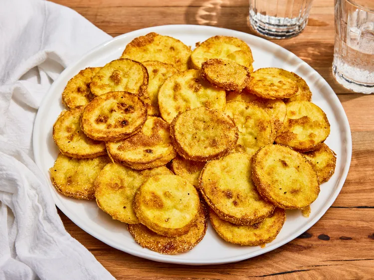

Country Fried Squash

Description
This fried squash recipe was my grandmother’s, and it actually won a blue
ribbon at the Tennessee State Fair! Be sure to use fresh squash. I use
butternut, but other squash like yellow squash or zucchini would also be
good.
Ingredients
- ½ cup milk
- 1 large egg, beaten
- ½ cup all-purpose flour
- ½ cup cornmeal
- 1 pinch garlic salt
- 1 pinch ground black pepper
- 1 pinch salt
- 1 cup oil, for frying
- 6 pounds yellow squash, sliced
Steps
- Gather all ingredients.
-
Whisk milk and egg together in a small bowl. Combine flour, cornmeal,
garlic salt, pepper, and salt together in a separate bowl.
-
Heat oil in a deep skillet over medium-high heat to 350 to 375 degrees F
(180 to 190 degrees C). Dip each squash slice into egg mixture, then
dredge in flour mixture to coat.
-
Fry coated squash slices in hot oil, a few at a time, until crisp and
golden brown on both sides. Drain on paper towel and serve immediately.